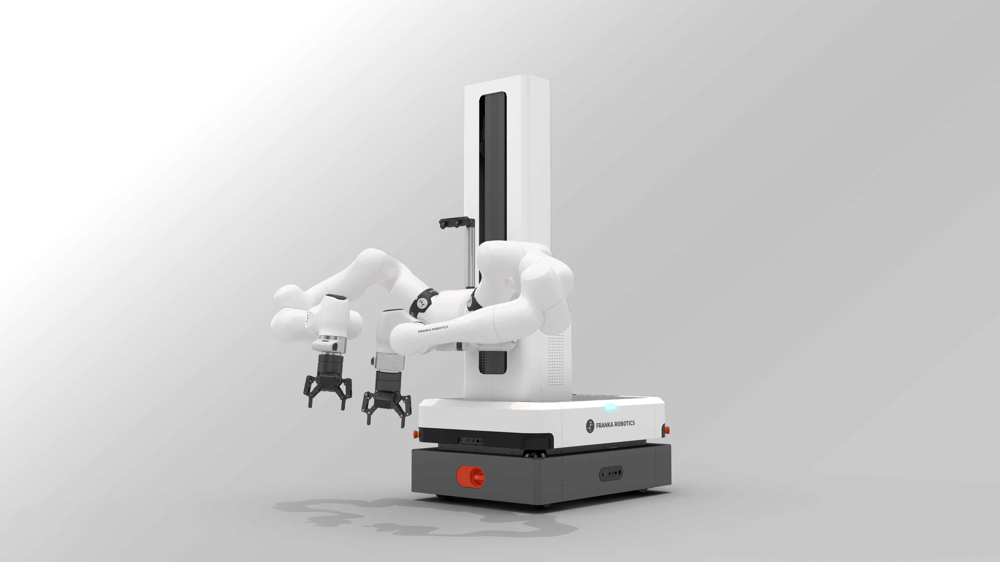

The EBiM Competition
A globally coordinated benchmark for real-world embodied bimanual manipulation
Why This Benchmark
Bimanual manipulation benchmarks today are fragmented. Some evaluate algorithms only in simulation. Others test on a single robot in a single lab. Neither answers the question that matters most: do these methods generalize across platforms, environments, and operators? The EBiM Competition introduces a globally coordinated benchmark that combines an open simulation phase with cross-continent real-robot validation on identical Mobile FR3 Duo platforms. By validating top simulation methods on real hardware in Beijing, Hamburg, Munich, and Pittsburgh, we build the first reproducible, cross-laboratory benchmark for embodied bimanual manipulation.
Three-Phase Mechanism
Phases I and II make up the Competition. Phase III is the IROS 2026 workshop where results are presented.
Open Simulation Benchmark
Release an open simulation benchmark focusing on unstructured manipulation scenarios: cable routing, deformable material handling (thermal pad placement), and caregiving and feeding tasks. Global teams participate through an open call on a shared, reproducible leaderboard.
Cross-Continent Real-World Validation
Top simulation entries are validated on real robots at partner labs in Beijing, Hamburg, Munich, and Pittsburgh. Unified hardware protocols and teleoperation pipelines ensure cross-site comparability.
IROS Workshop & Roadmap Release
Competition results, invited talks, and a panel discussion are presented at IROS 2026. The workshop releases the benchmark protocol, open dataset, and community roadmap for future iterations.
Phase III takes place at IROS 2026 — see the Workshop page for the full program.
Competition Platform: Mobile FR3 Duo
A standardized bimanual mobile manipulation platform by Franka Robotics, deployed across all international testbed sites.


Mobile FR3 Duo extends the FR3 Duo reference platform into mobile environments by integrating it with Tactile Mobile Robot (TMR). It combines dual-arm manipulation, rich perception, and omnidirectional mobility into a single embodied AI system — enabling data collection and policy execution beyond fixed workcells. All competition testbeds in Beijing, Hamburg, Munich, and Pittsburgh use identical Mobile FR3 Duo platforms to ensure cross-site reproducibility.
Learn more at franka.de/product-prototypes · Franka Robotics GmbH
The Benchmark
A multi-axis framework for fair and meaningful evaluation of bimanual manipulation systems.
Current bimanual manipulation benchmarks are fragmented across hardware platforms, task definitions, and evaluation criteria. Our workshop targets the design of a community-wide standard covering task diversity, generalization, robustness, and deployment readiness — evaluated on real robots under standardized conditions.
Task Suite
Three core tasks: cable routing, deformable material handling (thermal pad placement), and caregiving & feeding.
Metrics
Success rate, precision, cycle time, generalization score, and human-comparative performance.
Data Protocol
Shared teleoperation, annotation schema, and hardware calibration guidelines for cross-site compatibility.
Hardware Agnosticism
Platform-neutral APIs and sim-to-real transfer tracks to include diverse robot embodiments.
Leaderboard
An open, continuously updated leaderboard with verified real-robot submissions.
Open Dataset
Curated multi-site demonstration dataset with diverse operators, environments, and objects.
Benchmark Tasks
Three core bimanual manipulation tasks spanning contact-rich assembly, deformable object handling, and human-centered caregiving.
Cable Routing & Plugging
Route a cable through clamps and plug from Port A to Port B. Requires color/positional understanding, sequential constraint satisfaction, and mobile repositioning.
Deformable Material Handling (Thermal Pad Placement)
Manipulate thermal silica pads of different colors, shapes, and sizes. The robot must peel deformable thermal pads from a backing sheet and precisely place them at specified semantic target locations. Requires integration of perception, contact-rich manipulation, and precise positioning.
Caregiving & Feeding
Autonomous feeding assistance using a spoon to scoop from a bowl of coffee beans. The robot must navigate to a feeding area where a mannequin head is placed at a random position, reach the target region, and deposit beans into an empty collection bowl. Evaluation counts the number of beans successfully transferred.
Task specifications, evaluation protocols, and simulation environments will be released as part of the benchmark framework.
Cross-Continent Testbeds
Identical Mobile FR3 Duo platforms deployed at four partner labs across Asia, Europe, and North America.
Asia testbed for real-robot validation of top simulation entries.
European testbed coordinating data protocols and operator calibration.
Industry testbed providing platform integration and deployment support.
North America testbed co-located with the IROS 2026 venue for live finals.
Call for Participation
We invite teams from academia and industry to compete in Phase I (simulation) and qualify for Phase II (real-robot validation).
Phase I — Simulation
- Open registration on the EBiM leaderboard
- Three benchmark tasks released with reproducible environments
- Submissions evaluated under standardized metrics
- Top entries qualify for Phase II
Phase II — Real-Robot Validation
- Top simulation entries validated on Mobile FR3 Duo
- Identical platforms in Beijing, Hamburg, Munich, Pittsburgh
- Unified teleoperation and calibration protocols
- Cross-site results aggregated for the leaderboard
Eligibility
- Open to academic and industry teams worldwide
- No platform-specific prior experience required
- Hardware-agnostic submissions encouraged
- Travel grants available for top finalists (TBD)
Sponsors & Support
We gratefully acknowledge the sponsors who make the EBiM Competition possible.

Interested in sponsoring? Contact us at iros.ebim@gmail.com to discuss hardware support, travel grants, or community partnership opportunities.
Looking for the Workshop Program?
Phase III of the EBiM initiative is the half-day workshop at IROS 2026, featuring invited talks, a panel discussion, and competition awards.